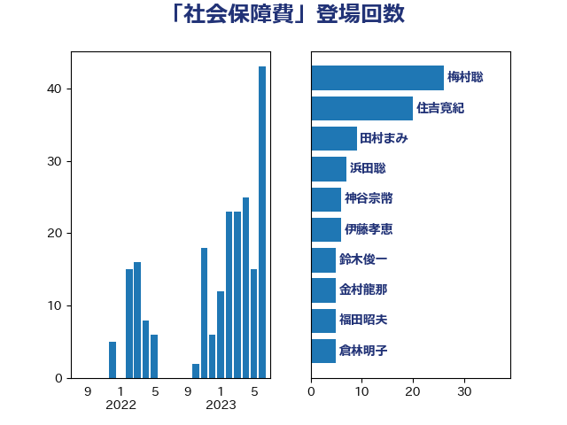

単語「社会保障費」

| 梅村聡 | 日本維新の会 | 26 回 |
| 住吉寛紀 | 日本維新の会 | 20 回 |
| 田村まみ | 国民民主党 | 9 回 |
| 浜田聡 | NHK党 | 7 回 |
| 神谷宗幣 | 参政党 | 6 回 |
| 伊藤孝恵 | 国民民主党 | 6 回 |
| 鈴木俊一 | 自由民主党 | 5 回 |
| 金村龍那 | 日本維新の会 | 5 回 |
| 福田昭夫 | 立憲民主党 | 5 回 |
| 倉林明子 | 日本共産党 | 5 回 |
| 岸田文雄 | 自由民主党 | 4 回 |
| 宮本徹 | 日本共産党 | 4 回 |
| 伊藤岳 | 日本共産党 | 4 回 |
| 馬場伸幸 | 日本維新の会 | 3 回 |
| 米山隆一 | 立憲民主党 | 3 回 |
| 篠原豪 | 立憲民主党 | 3 回 |
| 泉健太 | 立憲民主党 | 3 回 |
| 山田美樹 | 自由民主党 | 3 回 |
| 宮本岳志 | 日本共産党 | 3 回 |
| 堀場幸子 | 日本維新の会 | 3 回 |
| 阿部司 | 日本維新の会 | 2 回 |
| 長妻昭 | 立憲民主党 | 2 回 |
| 浅野哲 | 国民民主党 | 2 回 |
| 池下卓 | 日本維新の会 | 2 回 |
| 東徹 | 日本維新の会 | 2 回 |
| 杉久武 | 公明党 | 2 回 |
| 山添拓 | 日本共産党 | 2 回 |
| 吉川沙織 | 立憲民主党 | 2 回 |
| 吉川元 | 立憲民主党 | 2 回 |
| 勝部賢志 | 立憲民主党 | 2 回 |
| 前原誠司 | 国民民主党 | 2 回 |
| 中司宏 | 日本維新の会 | 2 回 |
| 一谷勇一郎 | 日本維新の会 | 2 回 |
| たがや亮 | れいわ新選組 | 2 回 |
| 高木真理 | 立憲民主党 | 1 回 |
| 高木宏壽 | 自由民主党 | 1 回 |
| 高木かおり | 日本維新の会 | 1 回 |
| 階猛 | 立憲民主党 | 1 回 |
| 野田国義 | 立憲民主党 | 1 回 |
| 野田佳彦 | 立憲民主党 | 1 回 |
| 赤嶺政賢 | 日本共産党 | 1 回 |
| 西岡秀子 | 国民民主党 | 1 回 |
| 藤井一博 | 自由民主党 | 1 回 |
| 若宮健嗣 | 自由民主党 | 1 回 |
| 芳賀道也 | 国民民主党 | 1 回 |
| 舩後靖彦 | れいわ新選組 | 1 回 |
| 舞立昇治 | 自由民主党 | 1 回 |
| 稲津久 | 公明党 | 1 回 |
| 福島みずほ | 社会民主党 | 1 回 |
| 矢倉克夫 | 公明党 | 1 回 |
| 田村智子 | 日本共産党 | 1 回 |
| 比嘉奈津美 | 自由民主党 | 1 回 |
| 櫻井周 | 立憲民主党 | 1 回 |
| 櫛渕万里 | れいわ新選組 | 1 回 |
| 梅谷守 | 立憲民主党 | 1 回 |
| 梅村みずほ | 日本維新の会 | 1 回 |
| 杉本和巳 | 日本維新の会 | 1 回 |
| 末松義規 | 立憲民主党 | 1 回 |
| 星北斗 | 自由民主党 | 1 回 |
| 島村大 | 自由民主党 | 1 回 |
| 岡田克也 | 立憲民主党 | 1 回 |
| 山井和則 | 立憲民主党 | 1 回 |
| 小池晃 | 日本共産党 | 1 回 |
| 守島正 | 日本維新の会 | 1 回 |
| 奥下剛光 | 日本維新の会 | 1 回 |
| 天畠大輔 | れいわ新選組 | 1 回 |
| 大塚耕平 | 国民民主党 | 1 回 |
| 堂込麻紀子 | 無所属 | 1 回 |
| 保岡宏武 | 自由民主党 | 1 回 |
| 佐々木紀 | 自由民主党 | 1 回 |
| 伊藤渉 | 公明党 | 1 回 |
| 伊佐進一 | 公明党 | 1 回 |